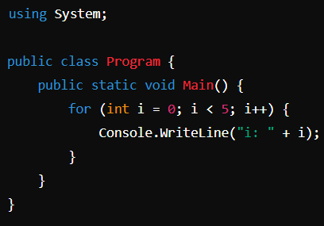
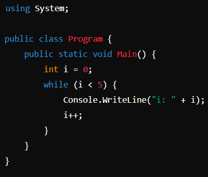
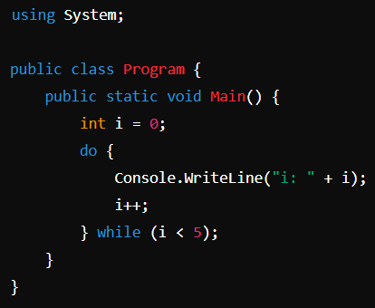
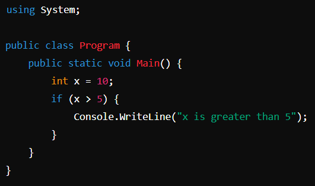

C# (C Sharp) е моќен и гибок програмски јазик, развиен од Microsoft. Тој е дизајниран за развој на апликации за платформата .NET и е еден од најпопуларните програмски јазици во светот.
Клучните карактеристики на C# вклучуваат:
Едноставност на употреба: C# е дизајниран да биде лесен за употреба, што го прави пристапен за почетни програмери, но и обезбедува широк спектар на можност за искусни развивачи.
Објектно-ориентирана парадигма: C# целосно го поддржува објектно-ориентираниот програмски модел, овозможувајќи креирање на модуларни, скалабилни и лесни за одржување апликации.
Интеграција со .NET платформата: C# е основен програмски јазик за развој на апликации за .NET платформата, што овозможува креирање на апликации за различни уреди и оперативни системи, вклучувајќи ги Windows, Linux и macOS.
Богата стандардна библиотека: C# доаѓа со обширна стандардна библиотека (BCL), која содржи многу корисни класи и методи за работа со датотеки, мрежи, бази на податоци, графика и друго.
Безбедност на типови: C# обезбедува строга типизација, што помага во откривањето на грешки во фазата на компајлирање и го зголемува нивото на безбедност на апликациите.
Многодрајверска поддршка: C# го поддржува многодрајверското програмирање, овозможувајќи креирање на ефикасни и отзивчиви апликации што ефикасно ги користат ресурсите на компјутерот.
Со комбинација на овие и други карактеристики, C# е привлечен избор за развој на различни видови на апликации, вклучувајќи ги настолните апликации, веб-апликации, мобилни апликации, игри и други.
Кога започнувате да учите C#, препорачливо е да започнете со следните чекори:
Инсталирајте го Visual Studio: Visual Studio е најпопуларната интегрирана развојна околина (IDE) за програмирање во C#. Инсталирајте го Visual Studio од официјалниот веб-сајт на Microsoft.
Основни концепти на C#: Започнете со учење на основните концепти на C#, вклучувајќи ги променливи, типови на податоци, оператори, контролни структури (if, switch, loops) и основни функции.
Објектно-ориентирано програмирање (ООП): Следете со учење на основните принципи на ООП како што се класи, објекти, наследство, полиморфизам и инкапсулација.
Работа со .NET Framework или .NET Core: Имајте јасно разбирање за како да го користите .NET Framework или .NET Core за развој на апликации.
Применето програмирање: Изработете неколку примери и вежби за да ги примените знаењата што сте ги стекнале. Започнете со едноставни конзолни апликации и постепено надградувајте кон по сложени апликации.
Продолжете да вежбате: Како со секое ново учење, вежбајте редовно за да ги усвоите новите концепти и да ги подобрите вашите вештини во програмирањето.
Потоа, за да отворите проект: File > New > Empty File, напишете го следниот код и потоа зачувајте
Да започнеме со неколку мали програми:
Hello World! - Класичниот начин. Оваа програма е многу едноставна и често се користи како пример за демонстрација на основниот синтакса на програмски јазик. Во овој случај, користиме Console.WriteLine за да испечатиме “Hello World” на конзолата.

Пресметување на сума. Напишете програма која ќе пресметува сума на два броја. Во следниот пример, користиме влез од корисникот:

Пресметување на факториел - Напишете програма која ќе го пресметува факториелот на даден број. Во следниот пример, користиме рекурзија:

Овој код користи for изјава за да го испечати бројот од 0 до 4. Изјавата започнува со i поставено на 0 и секој пат го зголемува i за 1 додека i е помало од 5.
Овој код користи while изјава за да го испечати бројот од 0 до 4. Изјавата започнува со i поставено на 0 и се повторува додека i е помало од 5. Со секое повторување i се зголемува за 1.
Овој код користи do while изјава за да го испечати бројот од 0 до 4. Изјавата се извршува најмалку еднаш и продолжува да се извршува додека i е помало од 5. Со секое повторување i се зголемува за 1.
Овој код користи if изјава за да провери дали x е поголемо од 5. Ако условот е исполнет, испечатува порака дека x е поголемо од 5.
